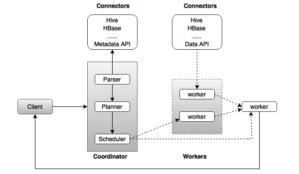

Apache Presto - Architecture
The architecture of Presto is almost similar to classic MPP (massively parallel processing) DBMS architecture. The following diagram illustrates the architecture of Presto.
The above diagram consists of different components. Following table describes each of the component in detail.
| S.No | Component & Description |
|---|---|
| 1. | Client Client (Presto CLI) submits SQL statements to a coordinator to get the result. |
| 2. | Coordinator Coordinator is a master daemon. The coordinator initially parses the SQL queries then analyzes and plans for the query execution. Scheduler performs pipeline execution, assigns work to the closest node and monitors progress. |
| 3. | Connector Storage plugins are called as connectors. Hive, HBase, MySQL, Cassandra and many more act as a connector; otherwise you can also implement a custom one. The connector provides metadata and data for queries. The coordinator uses the connector to get metadata for building a query plan. |
| 4. | Worker The coordinator assigns task to worker nodes. The workers get actual data from the connector. Finally, the worker node delivers result to the client. |
Presto − Workflow
Presto is a distributed system that runs on a cluster of nodes. Presto’s distributed query engine is optimized for interactive analysis and supports standard ANSI SQL, including complex queries, aggregations, joins, and window functions. Presto architecture is simple and extensible. Presto client (CLI) submits SQL statements to a master daemon coordinator.
The scheduler connects through execution pipeline. The scheduler assigns work to nodes which is closest to the data and monitors progress. The coordinator assigns task to multiple worker nodes and finally the worker node delivers the result back to the client. The client pulls data from the output process. Extensibility is the key design. Pluggable connectors like Hive, HBase, MySQL, etc., provides metadata and data for queries. Presto was designed with a “simple storage abstraction” that makes it easy to provide SQL query capability against these different kind of data sources.
Execution Model
Presto supports custom query and execution engine with operators designed to support SQL semantics. In addition to improved scheduling, all processing is in memory and pipelined across the network between different stages. This avoids unnecessary I/O latency overhead.